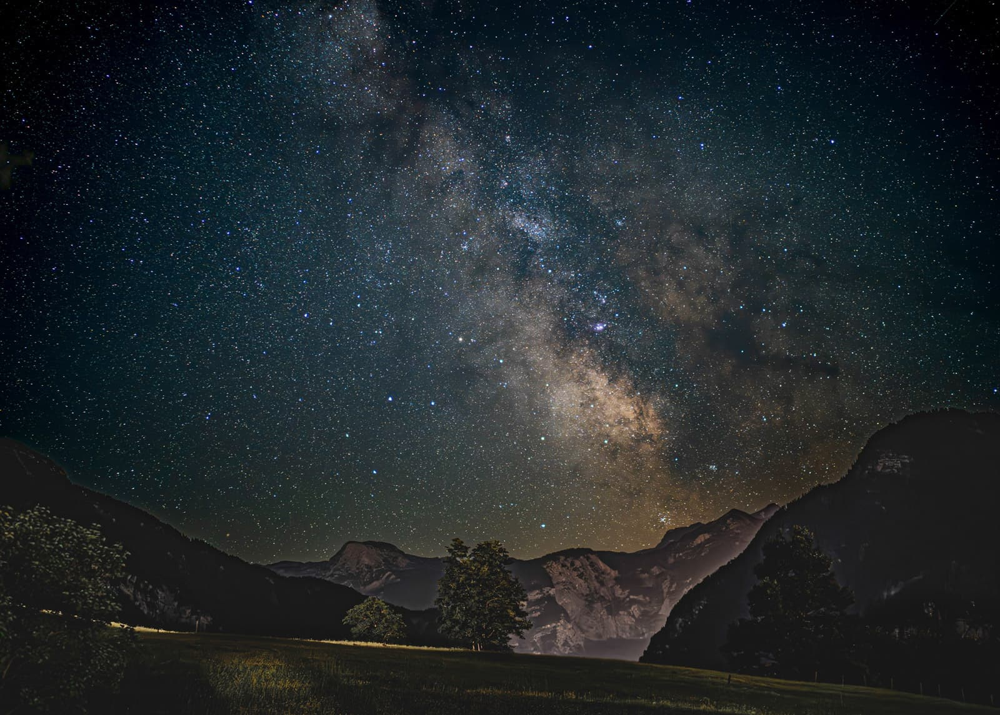
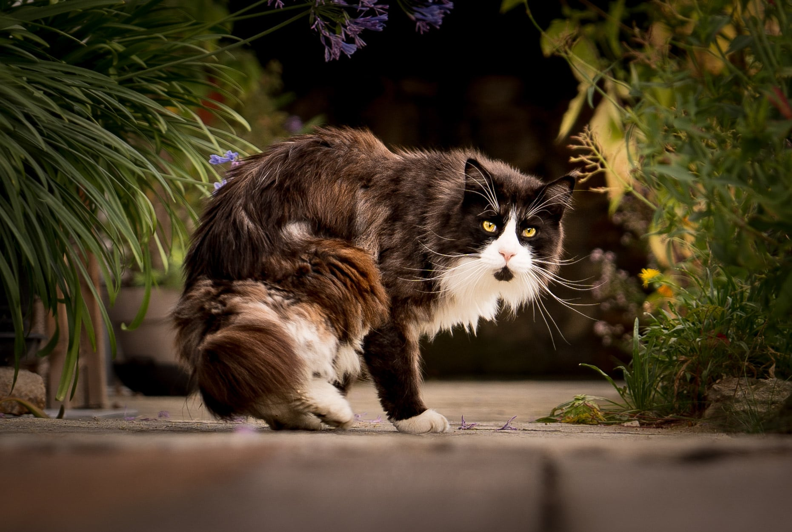
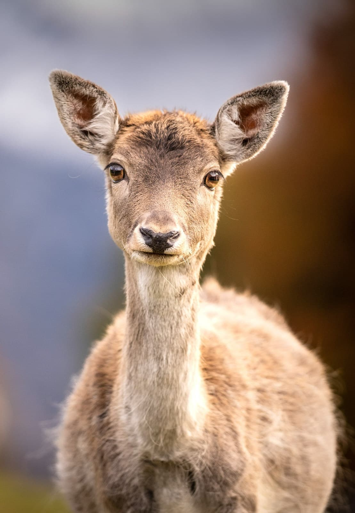
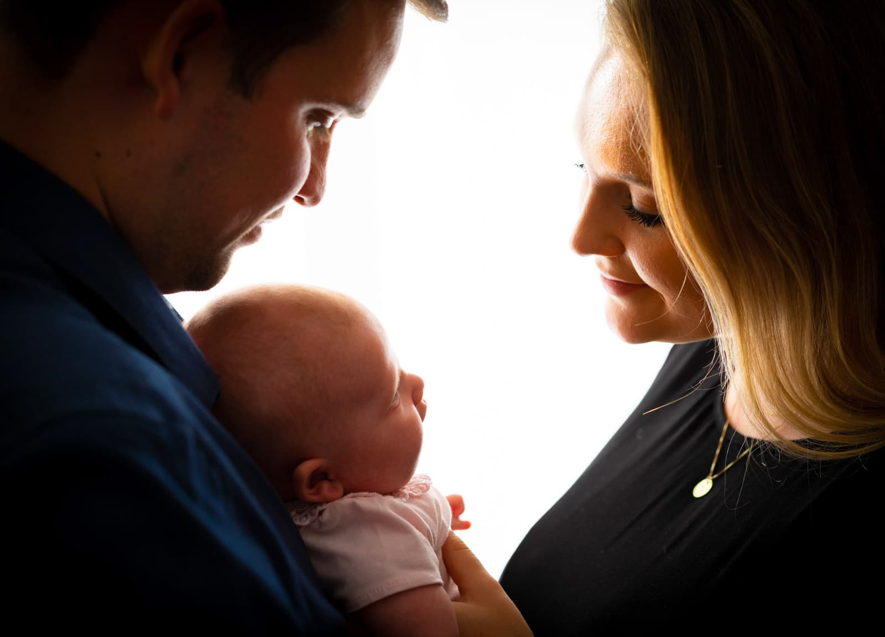
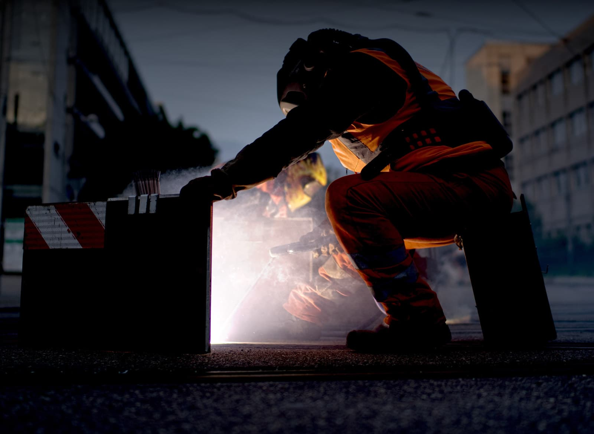
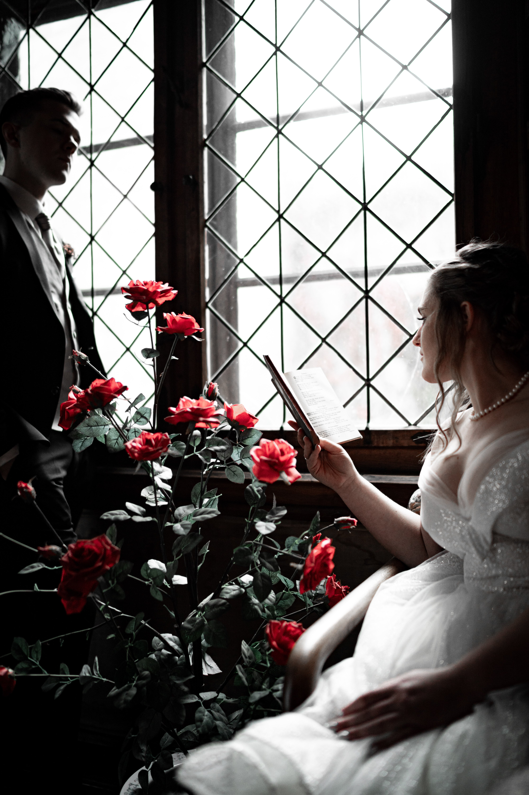
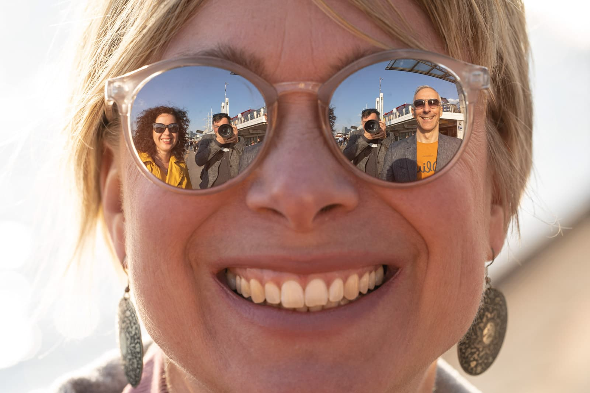
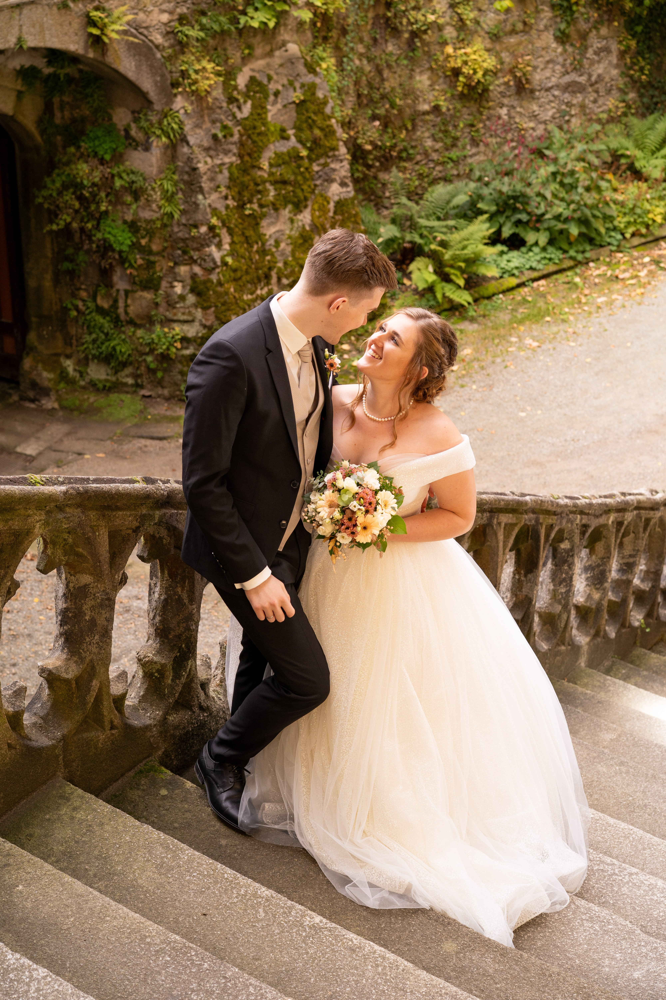

Hannes Schwarz, Hochzeits- und Eventfotograf aus Waldkirchen –
natürliche Bilder, echte Geschichten, mitten im Bayerischen Wald.
Hochzeiten • Business-Porträts • Events
Ich bin Hannes von SchwarzLicht PHOTOGRAPHY aus Waldkirchen im Bayerischen Wald. Mit Leidenschaft und einem scharfen Auge für Licht und Emotion fange ich besondere Momente ein.
Für mich geht es nicht nur um technische Perfektion, sondern vor allem darum, echte Gefühle und authentische Geschichten festzuhalten.
Nach deiner Anfrage sprechen wir per Telefon, Video oder gerne persönlich bei einer Tasse Kaffee über deine Wünsche und Vorstellungen. Danach erhältst du ein konkretes Angebot.
Sobald du dich entschieden hast, legen wir den genauen Termin und Zeitplan fest – flexibel, ganz nach deinem Tempo.
Ich passe mich komplett deiner Stimmung an: unauffällig im Hintergrund oder aktiv anleitend bei Gruppen. Spontane Ideen sind willkommen. Wir hören erst auf, wenn du wirklich zufrieden bist – unabhängig von Wetter oder Umständen.
Hier beginnt die eigentliche Arbeit. Jedes Bild wird professionell bearbeitet, kleine Störungen entfernt und bei Bedarf für großformatige Prints optimiert.
Du erhältst eine persönliche Online-Galerie, in der du in Ruhe deine Lieblingsbilder auswählen kannst. Auf Wunsch auch Fotobuch oder direkte Datenübergabe.
Erst wenn du mit dem Ergebnis rundum glücklich bist, ist das Projekt für mich abgeschlossen.

„Deine ersten 10.000 Fotos sind die schlechtesten.“
— Henri Cartier-Bresson

„Es ist eine Illusion, dass Fotos mit der Kamera gemacht werden… sie werden mit dem Auge, dem Herz und dem Kopf gemacht.“
— Henri Cartier-Bresson

„Man sieht auf meinen Bildern, dass ich keine Angst hatte, mich in diese Menschen zu verlieben.“
— Annie Leibovitz

„Es gibt keine Regeln für gute Fotos, es gibt nur gute Fotos.“
— Ansel Adams

„Licht ist der Pinsel. Die Kamera ist nur das Werkzeug.“
— Unbekannt
„Der Moment entscheidet – nicht die Technik.“

„Fotografie ist die Kunst, den unsichtbaren Augenblick sichtbar zu machen.“

„Es ist eine Sache, ein Bild davon zu machen, wie eine Person aussieht – es ist eine andere Sache, ein Porträt davon zu machen, wer sie ist. “
— Paul Caponigro
„Jedes Foto erzählt eine Geschichte – ich höre nur zu.“

Faire und transparente Pakete – individuell anpassbar
ab 900 €
ab 100 €
ab 300 €
....€
Doch so individuell wie die Wünsche und Bedürfnisse sind, so flexibel bin ich auch bei der Preisgestaltung.
Darum die Frage: Was ist es dir wert?
Ihr gebt den finanziellen Rahmen vor und ich arbeite damit.
Dein Angebot
Die Angebote oben entsprechen dem momentanen Marktwert und sind als Richtwerte gedacht.
5,0
aus 10 Google-Bewertungen
„Vielen lieben Dank für die wunderschönen Fotos und die angenehme Atmosphäre.
Das gesamte Shooting war sehr angenehm und hat viel Spaß gemacht. Ich bin mit den Bildern sehr zufrieden und habe viele schöne Aufnahmen bekommen. Vielen Dank für die tolle Arbeit“
Samuel Mairleitner
Bike-Shooting
„Wir haben unsere standesamtliche Hochzeit von dem lieben Hannes fotografieren lassen. Wir würden uns jeder Zeit wieder für ihn entscheiden... Ein super talentierter Fotograf mit Herz!“
Celina Heinen
Standesamtliche Hochzeit
„Das Vertrauen anlässlich unseres 40jährigen Firmenjubiläums wurde in Form wunderschöner Momentaufnahmen mehr als bestätigt. Als Event-Fotograf auf jeden Fall weiterzuempfehlen.“
Karl Glass
Firmenjubiläum
„Danke für die tollen Familienfotos und vor allem für die Zeit, die du in die Nachbearbeitung gesteckt hast! Das Besondere ist, dass die Fotos nicht gestellt sind.“
Elena F
Familien-Shooting
„Man bemerkt wirklich die Freude und das Interesse am Fotografieren... Wir haben super Fotos bekommen. Sehr empfehlenswert!“
Ronja E
„Wir haben bei SchwarzLicht Photography ein Babyfotoshooting machen lassen. Waren sehr zufrieden! Der Fotograf war sehr freundlich und kann gut mit Kindern umgehen.“
Laura Auerhammer
Baby-Shooting
„Eine Bildsprache die ihresgleichen sucht. Ästhetisch. Pfiffig. Wunderschön. Sehr zu empfehlen!“
Michael Lambert
„...haben uns von der 1. Minute sehr wohl mit ihm gefühlt.
... alles in Ruhe besprochen & auf unsere Wünsche wurde zu 100% eingegangen. ... hat uns die ganze Anspannung genommen. Und es sind viele schöne, unvergessliche Momente zu wunderschönen Bildern für die Ewigkeit geworden.
Sabrina Pauli
Standesamtliche Hochzeit